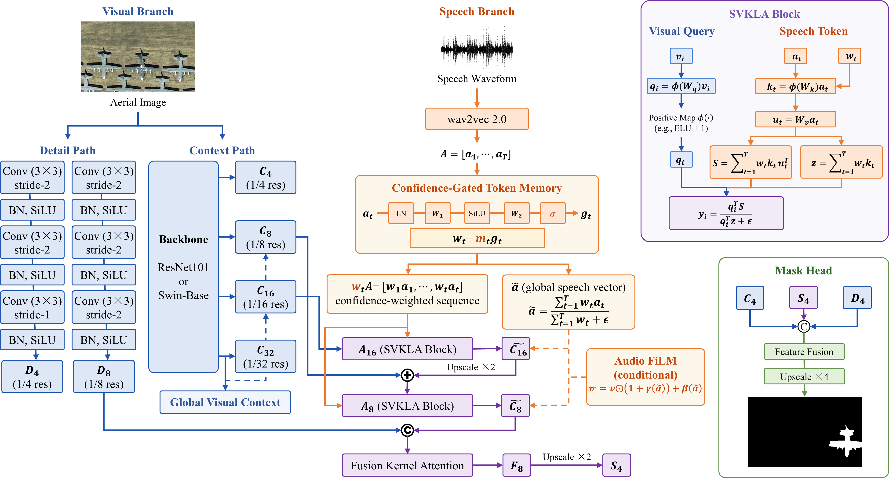
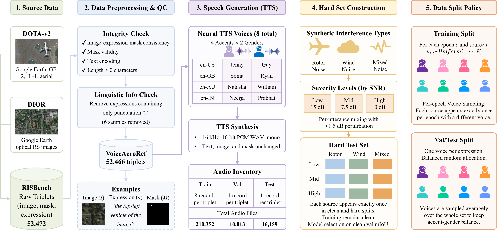

Confidence-gated speech memory
Wav2Vec2 tokens receive learned confidence weights before cross-modal interaction, reducing the influence of weak or corrupted regions.
Audio × Vision × Remote Sensing
AeroReformer2 converts a spoken referring expression and an aerial image into a precise segmentation mask—combining confidence-gated speech tokens, linear cross-modal attention and high-resolution boundary refinement.
“The small plane at the top-left corner.”
The method
AeroReformer2 preserves speech tokens, learns their confidence and routes them into hierarchical visual features. A shared high-resolution head restores boundaries that coarse semantic features lose.
Wav2Vec2 tokens receive learned confidence weights before cross-modal interaction, reducing the influence of weak or corrupted regions.
Speech-to-visual attention uses associative reductions instead of an explicit visual-by-audio attention matrix.
Swin-B or ResNet101 features at 1/32, 1/16 and 1/8 resolutions carry global context into speech-conditioned localization.
Backbone context, audio-conditioned semantics and a detail path meet at 1/4 resolution before the final mask is restored.

VoiceAeroRef
Clean speech covers four accent groups and two genders. Hard validation and test splits introduce rotor, wind and mixed interference at three SNR-centred severity levels.
| Config | Split | Records |
|---|---|---|
| Clean | Train | 210,352 |
| Clean | Validation | 10,013 |
| Clean | Test | 16,159 |
| Hard | Validation | 10,013 |
| Hard | Test | 16,159 |
Training remains clean. Model selection uses clean validation mIoU.

Reproduce
The repository includes deterministic data preparation, clean-validation checkpoint selection, seven segmentation metrics, sharded mask export and GPU efficiency profiling.
git clone https://github.com/lironui/AeroReformer2.git
cd AeroReformer2
python -m venv .venv
source .venv/bin/activate
pip install -e .python scripts/prepare_voiceaeroref.py \
--output data/VoiceAeroRef \
--configs clean hard \
--verify-checksumspython -m aeroreformer2.train \
--model aeroreformer2_swin_b \
--risbench-root data/RISBench \
--audio-root data/VoiceAeroRef \
--train-manifest data/VoiceAeroRef/manifests/train.jsonl \
--val-manifest data/VoiceAeroRef/manifests/validation.jsonl \
--output runs/aeroreformer2_swin_b \
--device cudapython -m aeroreformer2.evaluate \
--checkpoint runs/aeroreformer2_swin_b/best.pt \
--manifests clean=data/VoiceAeroRef/manifests/test.jsonl \
--risbench-root data/RISBench \
--audio-root data/VoiceAeroRef \
--output outputs/metrics.json \
--prediction-root outputs/predictions \
--device cudaOpen research release
Model code, training tools, validation metrics, data preparation and a deployable project page—without internal baselines or ablation code.